The following objects are masked from 'package:ggridges':
scale_point_color_continuous, scale_point_color_discrete,
scale_point_colour_continuous, scale_point_colour_discrete,
scale_point_fill_continuous, scale_point_fill_discrete,
scale_point_size_continuous
CODE
gf_boxplot( s_NABS ~ pretty_condition, color =~pretty_condition, data = df) +labs(title ="Distribution of ABSOLUTE Score by Condition")
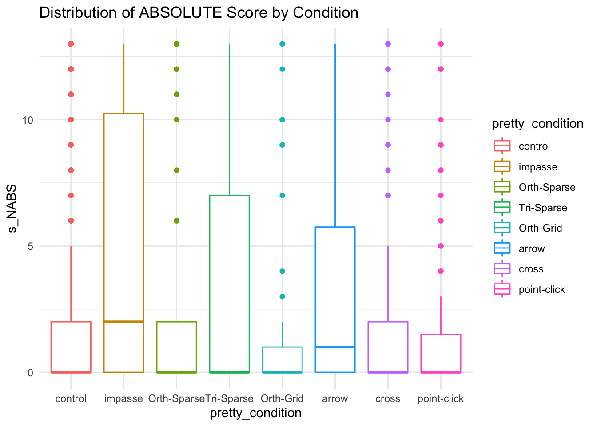
CODE
gf_boxplot(s_SCALED~ pretty_condition, color =~pretty_condition, data = df) +labs(title ="Distribution of SCALED Score by Condition")
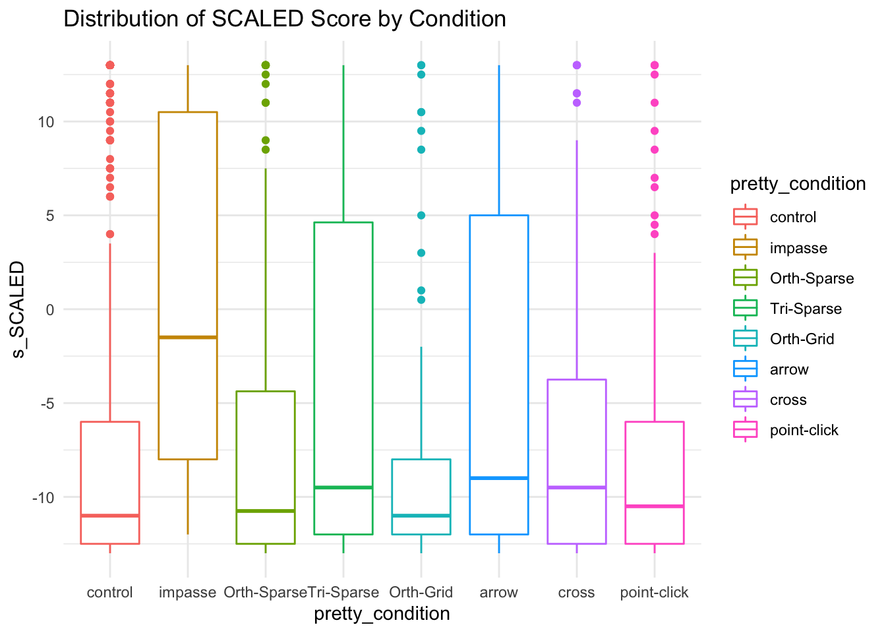
CODE
#GGDIST HALFEYEggplot(df, aes(y = pretty_condition, x = s_NABS,fill = pretty_condition) ) + ggdist::stat_halfeye(point_interval ="mean_qi"# side = "left",# justification = 1.1,# width = 1, # point_colour = NA ) +labs (title ="Distribution of Absolute Score by Condition",x ="Total Absolute Score" ) +theme(legend.position ="blank")
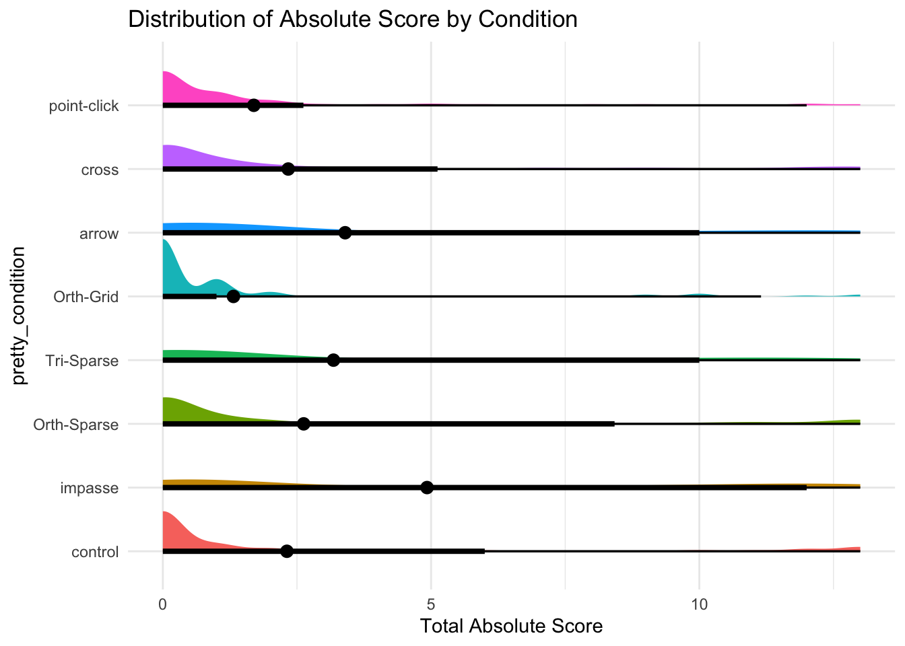
CODE
#DENSITY RIDGES BINLINEggplot(df, aes(x = DV_percent_NABS, y = pretty_condition, height=stat(density))) +# geom_density_ridges( stat = "density",alpha = 0.7)geom_density_ridges( alpha =0.7, stat ="binline", bins =20, scale =0.75, draw_baseline =FALSE) +labs(title ="Distribution of ABSOLUTE Score by Condition")
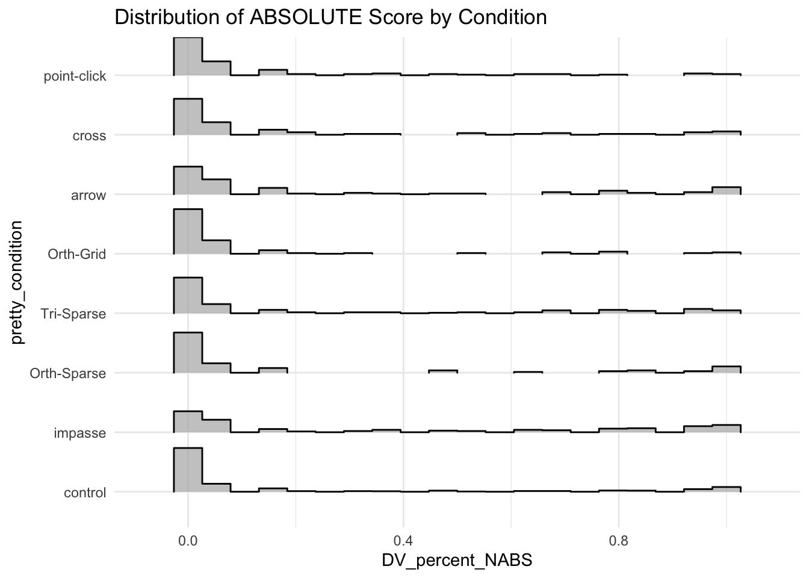
CODE
#DENSITY RIDGES SMOOTHggplot(df, aes(x = DV_percent_NABS, y = pretty_condition, fill=pretty_condition)) +xlim(0,1) +stat_density_ridges( scale =0.75, stat ="density", jittered_points =TRUE, position =position_points_jitter(width =0.05, height =0),point_shape ='|', point_size =2, point_alpha =1, alpha =0.7) +labs(title ="Distribution of ABSOLUTE Score by Condition")
Warning: Ignoring unknown parameters: stat
Picking joint bandwidth of 0.064
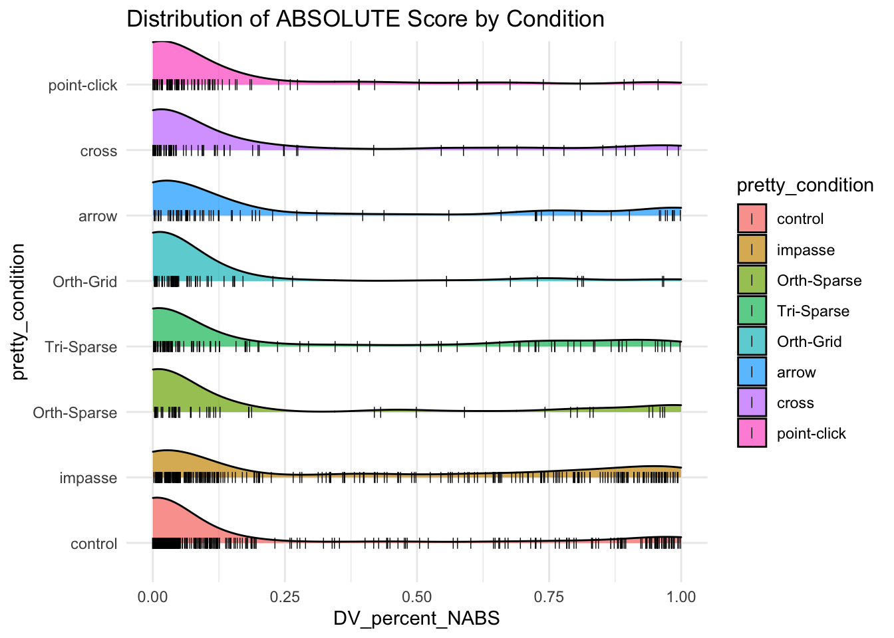
RESPONSE ACCURACY
Subject Level Scores
Subject level scores summarize the the response accuracy by a particular participant across all discriminant items in the graph comprehension task.
Absolute Score
CODE
#GGFORMULA | DENSITY HISTOGRAM SUBJECT TOTAL ABSOLUTEgf_props(~s_NABS, data = df_all) +labs(x ="number of correct responses ",y ="% of subjects",title ="Distribution of Absolute Score ",subtitle ="Modes at high and low ends of scale suggest concentration of high (vs) low understanding")
CODE
##GGPUBR | HIST+DENSITY SCORE BY CONDITION/MODEp <-gghistogram(df_all, x ="s_NABS", binwidth =0.5,add ="mean", rug =TRUE,fill ="pretty_condition", #, palette = c("#00AFBB", "#E7B800"),add_density =TRUE)facet(p, facet.by=c("pretty_condition")) +labs( title ="Distribution of Absolute Score",subtitle ="Pattern of response is similar across data collection modes but differs by condition",x ="Total Absolute Score", y ="number of subjects") +theme_minimal() +theme(legend.position ="blank")
CODE
##VERTICAL RAINCLOUD USING GGDISTRggplot(df_all, aes(x = pretty_condition, y = s_NABS,fill = pretty_condition) ) + ggdist::stat_halfeye(side ="left",justification =1.1,width =1, point_colour =NA ) +geom_boxplot(inherit.aes =FALSE, #supress fillmapping =aes(x=pretty_condition, y = s_NABS),width = .15, outlier.shape =NA ) +geom_point(inherit.aes =FALSE, #supress fillmapping =aes(x=pretty_condition, y = s_NABS, color = pretty_condition),size =1.3,alpha = .3,position =position_jitter( seed =1, width = .05 )) +labs( title ="Distribution of Absolute Score ",x ="Condition", y ="Total Absolute Score") +theme(legend.position ="blank") +coord_cartesian(xlim =c(0.5, NA), clip ="off")
CODE
#PLOT EMPIRICIAL CUMULATIVE DISTRIBUTION FUNCTIONggplot(data = df_all, aes(item_test_NABS)) +stat_ecdf(geom ="step") +facet_wrap(pretty_condition~.) +labs( title ="Empirical Cumulative Density Function — Absolute Score ",x ="Total Absolute Score [0,13]", y ="Cumulative Probability")
Scaled Scores
CODE
#GGFORMULA | DENSITY HISTOGRAM SUBJECT TOTAL SCALEDgf_props(~s_SCALED, data = df_all) +labs(x ="total scaled score",y ="% of subjects",title ="Distribution of Scaled Score ",subtitle ="Modes at high and low ends of scale suggest concentration of high (vs) low understanding")
CODE
##GGPUBR | HIST+DENSITY SCORE BY CONDITION/MODEp <-gghistogram(df_all, x ="s_SCALED",binwidth=1,add ="mean", rug =TRUE,fill ="pretty_condition", #, palette = c("#00AFBB", "#E7B800"),add_density =TRUE) facet(p, facet.by=c("pretty_condition")) +labs( title ="Distribution of Scaled Score",subtitle ="Pattern of response is similar across data collection modes but differs by condition",x ="total scaled score (test phase)", y ="number of participants") +theme_minimal() +theme(legend.position ="blank")
CODE
##VERTICAL RAINCLOUD USING GGDISTRggplot(df_all, aes(x = pretty_condition, y = s_SCALED,fill = pretty_condition) ) + ggdist::stat_halfeye(side ="left",justification =1.1,width =1, point_colour =NA ) +geom_boxplot(inherit.aes =FALSE, #supress fillmapping =aes(x=pretty_condition, y = s_SCALED),width = .15, outlier.shape =NA ) +geom_point(inherit.aes =FALSE, #supress fillmapping =aes(x=pretty_condition, y = s_SCALED, color = pretty_condition),size =1.3,alpha = .3,position =position_jitter( seed =1, width = .05 )) +labs( title ="Distribution of Scaled Score ",x ="Condition", y ="Total Absolute Score (Test Phase)") +theme(legend.position ="blank") +coord_cartesian(xlim =c(0.5, NA), clip ="off")
CODE
#PLOT EMPIRICIAL CUMULATIVE DISTRIBUTION FUNCTIONggplot(data = df_all, aes(s_SCALED)) +stat_ecdf(geom ="step") +facet_wrap(~pretty_condition) +labs( title ="Empirical Cumulative Density Function — Scaled Score",x ="Test Phase Scaled Score [-8,8]", y ="Cumulative Probability")
First Item Scores
Next we consider the response accuracy on just the first question of the graph comprehension task: a subject’s first exposure to the TM graph.
First Item Absolute Score
CODE
#PROPORTIONAL BAR CHARTgf_props(~item_q1_NABS, data = df_all) +labs(x ="response accuracy",y ="% subjects",title ="Proportion of Correct Responses on First Item",subtitle="")+theme(legend.position ="none")+theme_ggdist()
CODE
#PROPORTIONAL BAR CHARTgf_props(~item_q1_NABS, data = df_all, fill =~pretty_condition) %>%gf_facet_wrap(~pretty_condition) +labs(x ="response accuracy",title ="Proportion of Correct Responses on First Item (by Modality and Condition)",subtitle="")+theme(legend.position ="none")
CODE
#MOSAIC PLOT# vcd::mosaic(main="Proportion of Correct Responses on First Item",# data = df_all, pretty_condition ~ item_q1_NABS, rot_labels=c(0,90,0,0), # offset_varnames = c(left = 4.5), offset_labels = c(left = -0.5),just_labels = "right",# spacing = spacing_dimequal(unit(1:2, "lines")))
First Item Scaled Score
At the item level, the scaled score gives us a numeric measure of correctness of interpretation, ranging from -1 to 1. (note: we evaluate scaled_score on the first item rather than interpretation, because no orthogonal interpretation is available in the impasse condition)
CODE
#GGFORMULA | PROPORTIONAL HISTOGRAM SUBJECT FIRST SCALEDgf_props(~item_q1_SCALED, data = df_all) +labs(x ="scaled score (first item)",y ="% of subjects",title ="Distribution of First Item Scaled Score",subtitle ="")
CODE
##GGPUBR | HIST+DENSITY SCORE BY CONDITION/MODEp <-gghistogram(df_all, x ="item_q1_SCALED", binwidth =0.5,add ="mean", rug =TRUE,fill ="pretty_condition", #, palette = c("#00AFBB", "#E7B800"),add_density =TRUE) facet(p, facet.by=c("pretty_condition")) +labs( title ="Distribution of First Item Scaled Score (by Mode and Condition)",subtitle ="Impasse condition yields more intermediate scores (indicating uncertainty)",x ="scaled score (firt item) ", y ="number of participants") +theme_minimal() +theme(legend.position ="blank")
CODE
##GGFORMULA | HIST+DENSITY SCORE BY CONDITION/MODE# stats = df_subjects %>% group_by(pretty_condition, mode) %>% dplyr::summarise(mean = mean(item_q1_SCALED))# gf_density(~item_q1_SCALED, data = df_subjects) %>%# gf_facet_grid(pretty_condition~mode, labeller = label_both) %>%# gf_lims(x = c(-1, 1)) %>%# gf_vline(data = stats, xintercept = ~mean, color = "red") +# labs( title = "Distribution of First Item Scaled Score (by Mode and Condition)",# subtitle ="Pattern of response is the same across data collection modes but differs by condition",# x = "scaled score (firt item) ", y = "number of participants") + # theme_minimal()
Interpretation Scores
TODO IMPORT ITEMS
CODE
# #PROPORTIONAL BAR CHART# gf_propsh(~interpretation, data = df_items, fill = ~pretty_condition) %>% # gf_facet_grid(pretty_condition~pretty_mode) +# labs(x = "% of items",# title = "Proportion of Interpretations Across Items",# subtitle="Impasse Condition yields shift from Orthogonal to alternative interpretations")+# theme(legend.position = "none")#MOSAIC PLOT# vcd::mosaic(main="Proportion of Interpretations across Conditions",# data = df_items, pretty_condition ~ interpretation, rot_labels=c(0,90,0,0), # offset_varnames = c(left = 4.5), offset_labels = c(left = -0.5),just_labels = "right",# spacing = spacing_dimequal(unit(1:2, "lines")))
Cumulative Task Performance
TODO CALC CUMULATIVE PERFORAMNCE OVER ALL ITEMS
CODE
# #VISUALIZE progress over time ABSOLUTE score # ggplot(data = df_absolute_progress, aes(x = question, y = score, group = subject, alpha = 0.01, color = pretty_condition)) + # geom_line(position=position_jitter(w=0.15, h=0.15), size=0.1) +# facet_wrap(~pretty_condition) + # labs (title = "Cumulative Absolute Score over sequence of task", x = "Question" , y = "Cumulative Absolute Score") + # scale_x_continuous(breaks = c(1,2,3,4,5,6,7,8,9,10,11,12,13)) +# theme_minimal() + theme(legend.position = "blank")# # #VISUALIZE progress over time SCALED score # ggplot(data = df_scaled_progress, aes(x = question, y = score, group = subject, alpha = 0.01, color = pretty_condition)) + # geom_line(position=position_jitter(w=0.15, h=0.15), size=0.1) +# facet_wrap(~pretty_condition) + # labs (title = "Cumulative Scaled Score over sequence of task", x = "Question" , y = "Cumulative Scaled Score") + # scale_x_continuous(breaks = c(1,2,3,4,5,6,7,8,9,10,11,12,13)) +# theme_minimal() + theme(legend.position = "blank")
RESPONSE LATENCY
Time on First Item
CODE
#HISTOGRAMgf_dhistogram(~item_q1_rt, data = df_all) %>%# gf_vline(xintercept = ~time.stats["lab",]$mean, color = "black") %>% gf_fitdistr(dist="gamma", color="red")+labs(title="Distribution of First Item Response Time (seconds)", subtitle ="fit by gamma distribution", x ="First Item Response Time (seconds)", y ="% items")
Warning in densfun(x, parm[1], parm[2], ...): NaNs produced
Warning in densfun(x, parm[1], parm[2], ...): NaNs produced
Warning in densfun(x, parm[1], parm[2], ...): NaNs produced
Warning in densfun(x, parm[1], parm[2], ...): NaNs produced
Warning in densfun(x, parm[1], parm[2], ...): NaNs produced
Warning in densfun(x, parm[1], parm[2], ...): NaNs produced
CODE
##GGPUBR | HIST+DENSITY SCORE BY CONDITION/MODEp <-gghistogram(df_all, x ="item_q1_rt", binwidth =0.5,add ="mean", rug =TRUE,fill ="pretty_condition", #, palette = c("#00AFBB", "#E7B800"),add_density =TRUE)facet(p, facet.by=c("pretty_condition")) +labs( title ="Distribution of First Item Response Time (seconds)",subtitle ="",x ="First Item Response Time (seconds)", y ="number of items") +theme_minimal() +theme(legend.position ="blank")
CODE
#recode as boolean correctdf_subjects <- df_subjects %>%mutate(item_q1_NABS =as.logical(item_q1_NABS))##RAINCLOUD USING GGDISTRggplot(df_all, aes(x = pretty_condition, y = item_q1_rt, color = item_q1_NABS) ) + ggdist::stat_halfeye(side ="left",justification =1.2, adjust = .5, width = .6, .width =0, point_colour =NA) +geom_boxplot(width = .15, outlier.shape =NA ) +geom_point(size =1.3,alpha = .3,position =position_jitter( seed =1, width = .1 )) +labs( title ="Distribution of First Item Response Time (seconds)",subtitle ="",y ="First Item Response Time (s)", x ="Condition") +theme_ggdist()
# # #HISTOGRAM# gf_dhistogram(~rt_s, data = df_items) %>%# gf_vline(xintercept = ~time.stats["lab",]$mean, color = "black") %>% # gf_fitdistr(dist="gamma", color="red")+# labs(title="Distribution of Item Response Time (seconds)", # subtitle = "fit by gamma distribution", x = "Item Response Time (seconds)", y = "% items") # # # ##GGPUBR | HIST+DENSITY SCORE BY CONDITION/MODE# p <- gghistogram(df_items, x = "rt_s", binwidth = 0.5,# add = "mean", rug = TRUE,# fill = "pretty_condition", #, palette = c("#00AFBB", "#E7B800"),# add_density = TRUE)# facet(p, facet.by=c("pretty_condition","pretty_mode")) +# labs( title = "Distribution of Item Response Time (seconds)",# subtitle ="",# x = "Item Response Time (seconds)", y = "number of items") +# theme_minimal() + theme(legend.position = "blank")# # # #recode as boolean correct# df_items <- df_items %>% mutate(# score_niceABS = as.logical(score_niceABS)# )# # ##RAINCLOUD USING GGDISTR# ggplot(df_items, aes(x = pretty_condition, y = rt_s, color = score_niceABS) ) + # ggdist::stat_halfeye(# side = "left",# # position = position_dodgejust(),# justification = 1.5, # # adjust = .5, # width = .5, # .width = 0, # point_colour = NA) + # geom_boxplot(# width = .15, # outlier.shape = NA,# position = position_dodge2()# ) +# geom_point(# size = 1.3,# alpha = .3,# position = position_jitterdodge(# # seed = 1,# dodge.width = 0.5,# jitter.width = 0.075# )) +# labs( title = "Distribution of Item Response Time (seconds)",# subtitle ="",# y = "Item Response Time (s)", x = "Condition") +# theme_ggdist() # # + theme(legend.position = "blank")# # + coord_cartesian(xlim = c(1.2, NA), clip = "off")
:::
Time on SCAFFOLD Phase
Here we consider just the time spent on the first five items of the task (the scaffold phase).
CODE
#HISTOGRAMgf_dhistogram(~item_scaffold_rt, data = df_all) %>%# gf_vline(xintercept = ~time.stats["lab",]$mean, color = "black") %>% gf_fitdistr(dist="gamma", color="red")+labs(title="Distribution of SCAFFOLD Phase Response Time (minutes)", subtitle ="fit by gamma distribution", x ="Scaffold Phase Time (minutes)", y ="% subjects")
Warning in densfun(x, parm[1], parm[2], ...): NaNs produced
Warning in densfun(x, parm[1], parm[2], ...): NaNs produced
Warning in densfun(x, parm[1], parm[2], ...): NaNs produced
Warning in densfun(x, parm[1], parm[2], ...): NaNs produced
Warning in densfun(x, parm[1], parm[2], ...): NaNs produced
Warning in densfun(x, parm[1], parm[2], ...): NaNs produced
Warning in densfun(x, parm[1], parm[2], ...): NaNs produced
Warning in densfun(x, parm[1], parm[2], ...): NaNs produced
Warning in densfun(x, parm[1], parm[2], ...): NaNs produced
Warning in densfun(x, parm[1], parm[2], ...): NaNs produced
Warning in densfun(x, parm[1], parm[2], ...): NaNs produced
Warning in densfun(x, parm[1], parm[2], ...): NaNs produced
CODE
##GGPUBR | HIST+DENSITY SCORE BY CONDITION/MODEp <-gghistogram(df_all, x ="item_scaffold_rt", binwidth =0.5,add ="mean", rug =TRUE,fill ="pretty_condition", #, palette = c("#00AFBB", "#E7B800"),add_density =TRUE)facet(p, facet.by=c("pretty_condition")) +labs( title ="Distribution of SCAFFOLD Phase Response Time (minutes)",subtitle ="",x ="Scaffold Phase Time (minutes)", y ="number of subjects") +theme_minimal() +theme(legend.position ="blank")
CODE
##VERTICAL RAINCLOUD USING GGDISTRggplot(df_all, aes(x = pretty_condition, y = item_scaffold_rt, fill = pretty_condition)) + ggdist::stat_halfeye(side ="left",justification =1.2, adjust = .5, width = .6, .width =0, point_colour =NA) +geom_boxplot(inherit.aes =FALSE, #supress fillmapping =aes(x=pretty_condition, y = item_scaffold_rt),width = .15, outlier.shape =NA ) +geom_point(inherit.aes =FALSE, #supress fillmapping =aes(x=pretty_condition, y = item_scaffold_rt, color = pretty_condition),size =1.3,alpha = .3,position =position_jitter( seed =1, width = .05 ))+labs( title ="Distribution of SCAFFOLD Phase Response Time (minutes)",subtitle ="",y ="Total Study Time (minutes)", x ="Condition") +theme_ggdist() +theme(legend.position ="blank") #+
#SCATTERPLOT [SCORE X ITEM RESPONSE TIME]gf_jitter( s_SCALED ~ rt_m, data = df_all, alpha =0.5, color=~pretty_condition) %>%gf_facet_wrap(~pretty_condition) +labs(title ="Total (Scaled) Score by Total Item Response Time",subtitle ="", x ="Total Item Response Time (minutes)", y ="Total Scaled Score " ) +theme(legend.position ="blank")
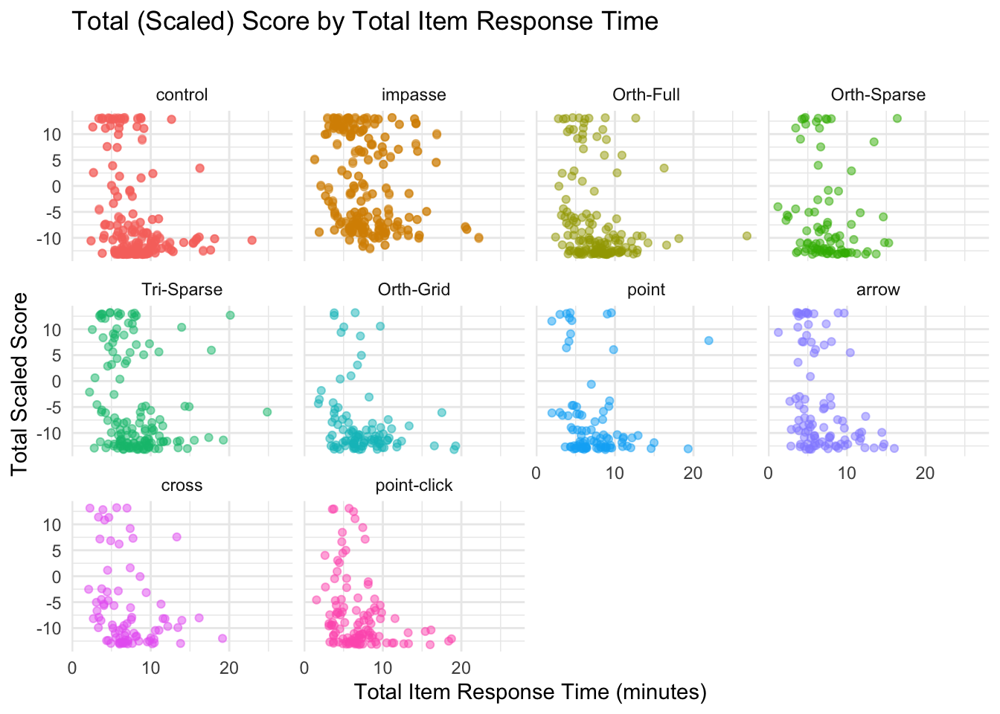
CODE
#SCATTERPLOT [SCORE X ITEM RESPONSE TIME]gf_jitter( s_SCALED ~ item_avg_rt, data = df_all, alpha =0.5, color=~pretty_condition) %>%gf_facet_wrap(~pretty_condition) +labs(title ="Total (Scaled) Score by Average Item Response Time",subtitle ="", x ="Average Item Response Time (seconds)", y ="Total Scaled Score" ) +theme(legend.position ="blank")
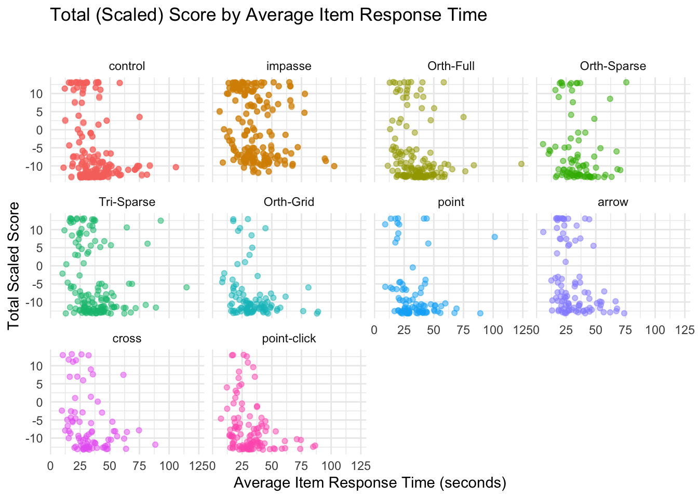
CODE
#SCATTERPLOT [SCORE X ITEM RESPONSE TIME]gf_jitter( s_SCALED ~ item_scaffold_rt, data = df_all, alpha =0.5, color=~pretty_condition) %>%gf_facet_wrap(~pretty_condition) +labs(title ="Total (Scaled) Score by SCAFFOLD PHASE Item Response Time",subtitle ="", x ="SCAFFOLD PHASE Item Response Time (minutes)", y ="Total Scaled Score " ) +theme(legend.position ="blank")
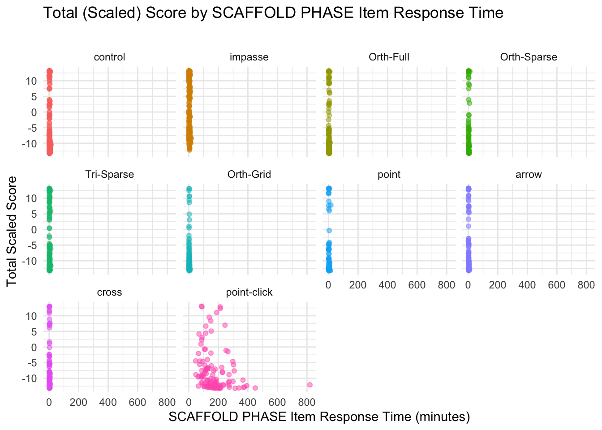
CODE
#SCATTERPLOT [SCORE X ITEM RESPONSE TIME]gf_jitter( s_SCALED ~ item_max_rt, data = df_all %>%filter(item_max_rt <400), alpha =0.5, color=~pretty_condition) %>%gf_facet_wrap(~pretty_condition) +labs(title ="Total (Scaled) Score by MAX Item Response Time",subtitle ="", x ="MAX Item Response Time (s)", y ="Total Scaled Score " ) +theme(legend.position ="blank")
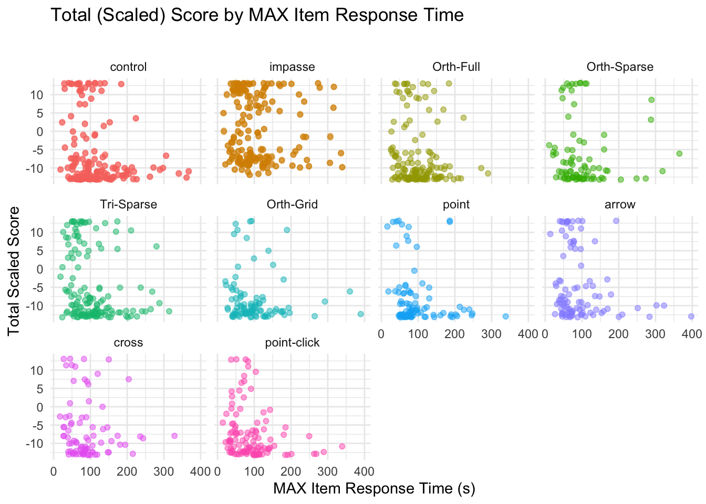
CODE
# # q.stats <- df_items %>% filter(q != 6) %>% dplyr::group_by(q, pretty_condition, score_niceABS) %>% summarise(# m = mean(rt_s),# sd = sd(rt_s),# group = paste(pretty_condition,"-",score_niceABS)# )# # gf_line( m ~ as.factor(q), group = ~group, color = ~score_niceABS,data = q.stats) %>% # gf_point() %>% # gf_facet_wrap(~pretty_condition) + scale_color_manual(values=c("red","green")) + # labs(title = "Average ITEM response time by condition",# subtitle = "Correct responses are generally faster [computational efficiency] except on Q1 [learning]",# x = "Question", y = "Averate Item Response Time", color="Correct Response")
CODE
# # q.stats <- df_items %>% filter(q != 6) %>% dplyr::group_by(q, pretty_condition, interpretation) %>% summarise(# m = mean(rt_s),# sd = sd(rt_s),# group = paste(pretty_condition,"-",score_SCALED)# )# # gf_line( m ~ as.factor(q), group = ~group, color = ~interpretation,data = q.stats) %>% # gf_point() %>% # gf_facet_wrap(~pretty_condition) + #+ scale_color_manual(values=c("red","green")) + # labs(title = "Average ITEM response time by condition",# subtitle = "Correct responses are generally faster [computational efficiency] except on Q1 [learning]",# x = "Question", y = "Averate Item Response Time", color="Interpretation")
CODE
# # x <- df_items %>% filter(q %nin% c(6,9)) %>% dplyr::group_by(subject) %>% mutate(# total = sum(score_niceABS),# perf = as.factor(total < 5),# perf = recode(perf, "FALSE"="high-scoring", "TRUE"="low-scoring")) %>% ungroup()# # gf_line( rt_s ~ as.factor(q), group = ~subject, color = ~interpretation, data = x) %>% # gf_facet_grid(pretty_condition ~ perf)+ scale_x_discrete(labels = c(1 , 2, 3, 4, 5, 7, 8, 10, 11, 12, 13, 14, 15))+ labs(# title = "Response Time (s) by Question [facet by score <5]"# )
CODE
gf_boxplot( item_avg_rt ~ pretty_condition, data = df_all) +labs(title ="Average item response time by mode and condition")
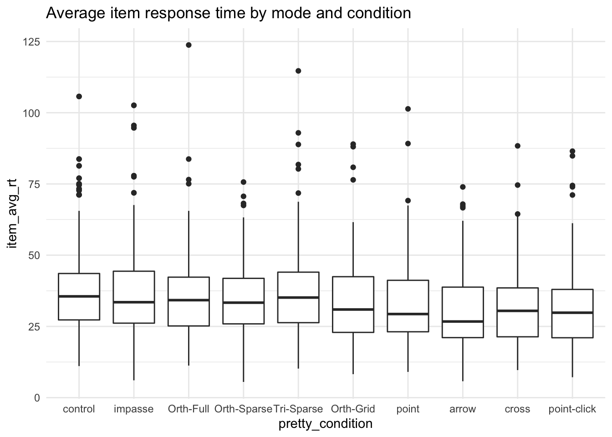
CODE
gf_boxplot( item_scaffold_rt ~ pretty_condition, data = df_all) +labs(title ="Average SCAFFOLD response time by mode and condition")
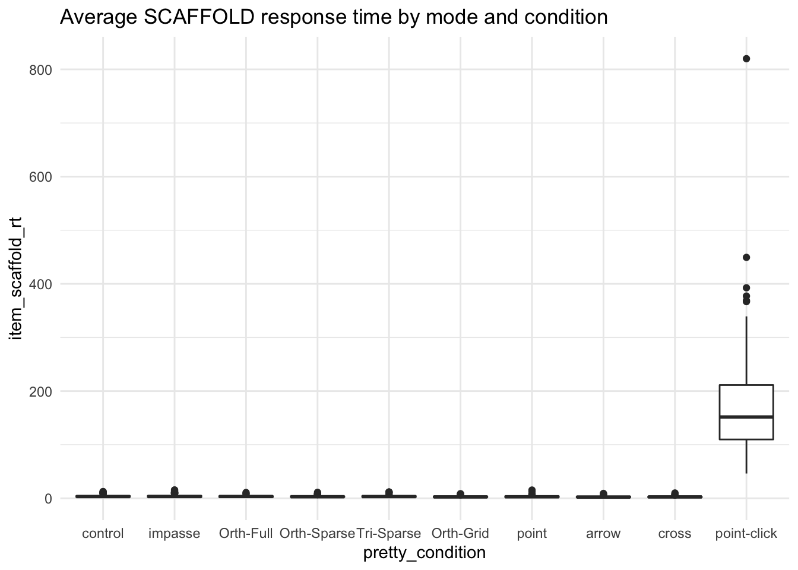
CODE
gf_boxplot( item_test_rt ~ pretty_condition, data = df_all) +labs(title ="Average TEST response time by mode and condition")
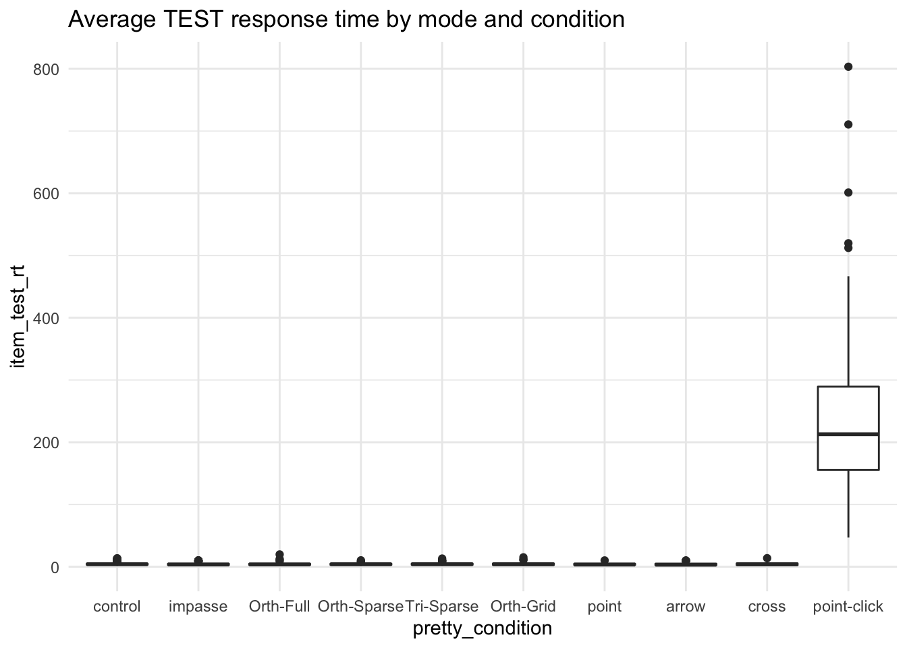
CODE
gf_boxplot( totaltime_m ~ pretty_condition, data = df_all) +labs(title ="Average TOTAL response time by mode and condition")
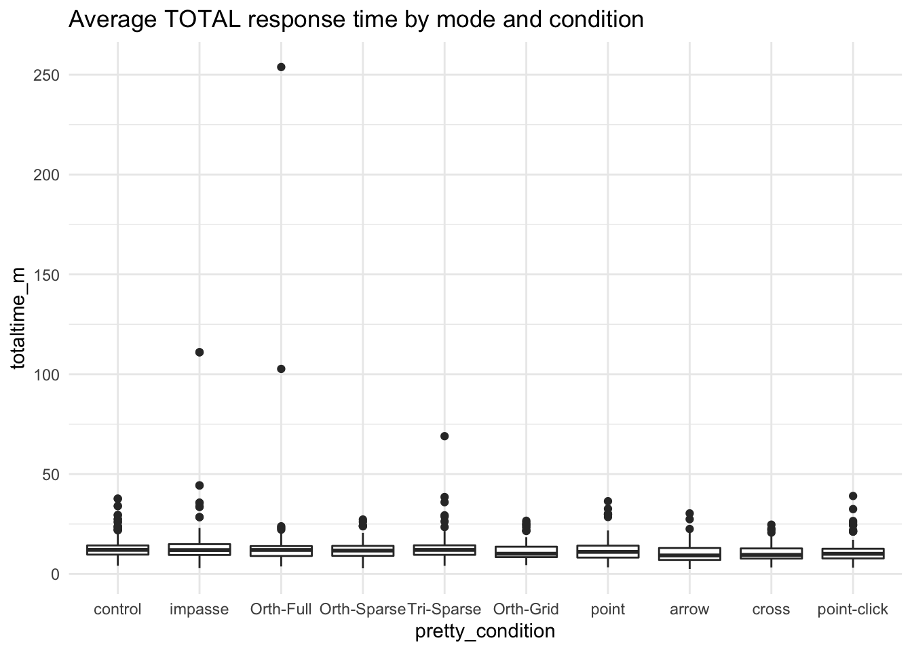
CODE
gf_boxplot( item_q1_rt ~ pretty_condition, data = df_all) %>%gf_jitter(width=0.2, alpha =0.5, size =0.75, color =~item_q1_NABS) +labs(title ="Average FIRST ITEM response time by mode and condition")
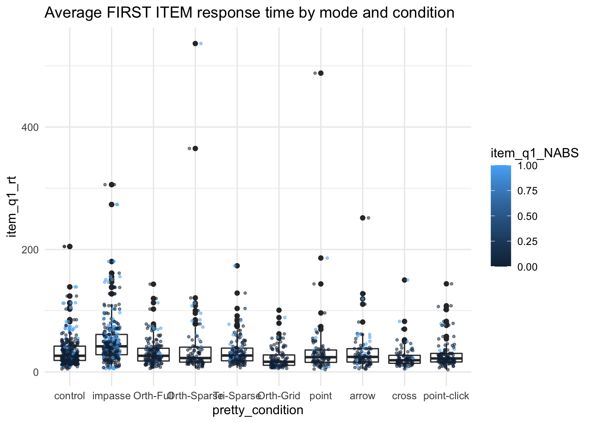
MODELS
CODE
library(report)library(see)library(generics)
Attaching package: 'generics'
The following object is masked from 'package:dplyr':
explain
The following objects are masked from 'package:base':
as.difftime, as.factor, as.ordered, intersect, is.element, setdiff,
setequal, union
CODE
library(modelr)
Attaching package: 'modelr'
The following objects are masked from 'package:performance':
mae, mse, rmse
The following object is masked from 'package:mosaic':
resample
The following object is masked from 'package:ggformula':
na.warn
CODE
library(distributional)## A GIANT MODELm <-lm(DV_percent_NABS ~ pretty_condition, data = df)summary(m)
Warning: 'data_findcols()' is deprecated and will be removed in a future update.
Its usage is discouraged. Please use 'data_find()' instead.
Warning: 'data_findcols()' is deprecated and will be removed in a future update.
Its usage is discouraged. Please use 'data_find()' instead.
Warning: 'data_findcols()' is deprecated and will be removed in a future update.
Its usage is discouraged. Please use 'data_find()' instead.
We fitted a linear model (estimated using OLS) to predict DV_percent_NABS with pretty_condition (formula: DV_percent_NABS ~ pretty_condition). The model explains a statistically significant and weak proportion of variance (R2 = 0.07, F(7, 1519) = 15.22, p < .001, adj. R2 = 0.06). The model's intercept, corresponding to pretty_condition = control, is at 0.18 (95% CI [0.15, 0.21], t(1519) = 12.36, p < .001). Within this model:
- The effect of pretty condition [impasse] is statistically significant and positive (beta = 0.20, 95% CI [0.16, 0.25], t(1519) = 8.63, p < .001; Std. beta = 0.57, 95% CI [0.44, 0.70])
- The effect of pretty condition [Orth-Sparse] is statistically non-significant and positive (beta = 0.02, 95% CI [-0.05, 0.10], t(1519) = 0.62, p = 0.537; Std. beta = 0.07, 95% CI [-0.15, 0.29])
- The effect of pretty condition [Tri-Sparse] is statistically significant and positive (beta = 0.07, 95% CI [4.50e-03, 0.13], t(1519) = 2.10, p = 0.036; Std. beta = 0.19, 95% CI [0.01, 0.37])
- The effect of pretty condition [Orth-Grid] is statistically significant and negative (beta = -0.08, 95% CI [-0.15, -3.64e-03], t(1519) = -2.06, p = 0.040; Std. beta = -0.22, 95% CI [-0.43, -0.01])
- The effect of pretty condition [arrow] is statistically significant and positive (beta = 0.08, 95% CI [0.01, 0.16], t(1519) = 2.24, p = 0.025; Std. beta = 0.24, 95% CI [0.03, 0.45])
- The effect of pretty condition [cross] is statistically non-significant and positive (beta = 1.92e-03, 95% CI [-0.08, 0.08], t(1519) = 0.05, p = 0.962; Std. beta = 5.48e-03, 95% CI [-0.22, 0.23])
- The effect of pretty condition [point-click] is statistically non-significant and negative (beta = -0.05, 95% CI [-0.12, 0.02], t(1519) = -1.36, p = 0.173; Std. beta = -0.14, 95% CI [-0.33, 0.06])
Standardized parameters were obtained by fitting the model on a standardized version of the dataset. 95% Confidence Intervals (CIs) and p-values were computed using the Wald approximation.
CODE
check_model(m)
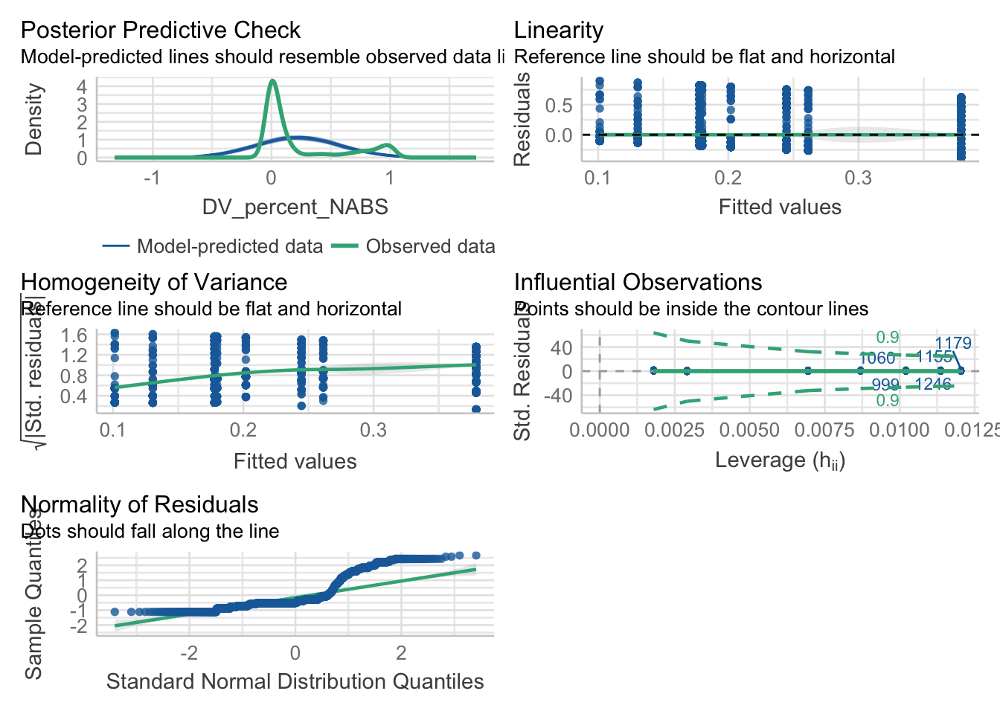
CODE
##UNCERTAINTY ESTIMATES OF THE MODEL df %>%data_grid(pretty_condition) %>%augment(m, newdata = ., se_fit =TRUE) %>%ggplot(aes(y = pretty_condition)) +stat_halfeye(aes(xdist =dist_student_t(df =df.residual(m), mu = .fitted, sigma = .se.fit)), scale = .5 ) +# we'll add the data back in too (scale = .5 above adjusts the halfeye height so# that the data fit in as well)geom_point(aes(x = DV_percent_NABS), data = df, pch ="|", size =2, position =position_nudge(y =-.15)) +labs(title ="Regression Model | Predicted Conditional Means",caption =" % Correct ~ Condition; halfeye estimated using student's t centered at model predicted mean with SE" )
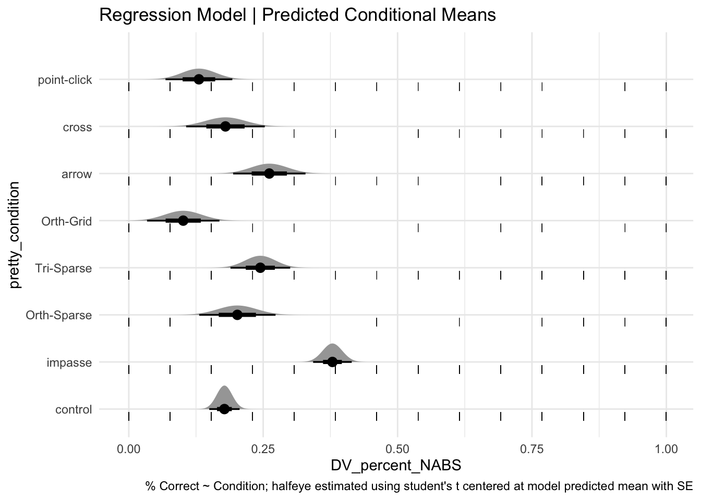
OSPAN
CODE
title ="OSPAN Participants by Condition"cols =c("Condition","n")cont <-table(df_subjects$pretty_condition)cont %>%addmargins() %>%kbl(caption = title, col.names = cols) %>%kable_classic()
OSPAN Participants by Condition
Condition
n
control
130
impasse
136
Orth-Full
0
Orth-Sparse
0
Tri-Sparse
0
Orth-Grid
0
point
0
arrow
0
cross
0
point-click
0
Sum
266
TODO OSPAN description
CODE
title ="Descriptive Statistics of OSPAN Task Accuracy"ospan.stats <-rbind("MATH"= df_subjects %>% dplyr::select(math_acc) %>%unlist() %>%favstats(),"ORDER"= df_subjects %>% dplyr::select(order_acc) %>%unlist() %>%favstats(),"WEIGHTED"= df_subjects %>% dplyr::select(weighted) %>%unlist() %>%favstats()) ospan.stats %>%kbl (caption = title) %>%kable_classic() %>%footnote(general ="MATH = %correct of all math questions; ORDER = % correct of OSPAN ordering (out of 30); WEIGHTED = math*ospan number correct", general_title ="Note: ",footnote_as_chunk = T)
Descriptive Statistics of OSPAN Task Accuracy
min
Q1
median
Q3
max
mean
sd
n
missing
MATH
0.517
0.897
0.931
0.966
1
0.924
0.085
266
0
ORDER
0.000
0.533
0.733
0.867
1
0.678
0.253
266
0
WEIGHTED
0.000
13.448
20.276
24.828
30
19.082
7.377
266
0
Note: MATH = %correct of all math questions; ORDER = % correct of OSPAN ordering (out of 30); WEIGHTED = math*ospan number correct
For (online) OSPAN weighted scores (n = 266) range from 0 to 30 with a mean score of (M = 19.08, SD = 7.38).
CODE
#GGFORMULA | DENSITY HISTOGRAM gf_dhistogram(~weighted, data = df_subjects) +labs(x ="OSPAN (weighted) score",y ="% of subjects",title ="Distribution of OSPAN SCORE",subtitle ="")
CODE
##GGPUBR | HIST+DENSITY SCORE BY CONDITION/MODEp <-gghistogram(df_subjects, x ="weighted", binwidth =1,add ="mean", rug =TRUE,fill ="pretty_condition", #, palette = c("#00AFBB", "#E7B800"),add_density =TRUE)facet(p, facet.by=c("pretty_condition")) +labs( title ="Distribution of OSPAN Score",subtitle ="The Distribution of OSPAN scores is similar across conditions",x ="OSPAN (weighted) score", y ="number of subjects") +theme_minimal() +theme(legend.position ="blank")
CODE
#PLOT EMPIRICIAL CUMULATIVE DISTRIBUTION FUNCTIONggplot(data = df_subjects, aes(weighted)) +stat_ecdf() +facet_wrap(~pretty_condition) +labs( title ="Empirical Cumulative Density Function — OSPAN",x ="OSPAN (weighted) score", y ="Cumulative Probability") +theme_minimal()
CODE
#IXN PLOT# ospan.stats <- favstats(weighted, groups = condition)
MODELS
CODE
#CONDITION ONLY MODELm1 <-lm( item_test_SCALED ~ condition, data = df_subjects)summary(m1)
Call:
lm(formula = item_test_SCALED ~ condition, data = df_subjects)
Residuals:
Min 1Q Median 3Q Max
-6.86 -3.38 -2.38 5.62 12.62
Coefficients:
Estimate Std. Error t value Pr(>|t|)
(Intercept) -4.623 0.518 -8.93 < 2e-16 ***
condition121 3.483 0.724 4.81 2.5e-06 ***
---
Signif. codes: 0 '***' 0.001 '**' 0.01 '*' 0.05 '.' 0.1 ' ' 1
Residual standard error: 5.9 on 264 degrees of freedom
Multiple R-squared: 0.0806, Adjusted R-squared: 0.0771
F-statistic: 23.1 on 1 and 264 DF, p-value: 2.54e-06
CODE
#OSPAN ONLY MODELm2 <-lm( item_test_SCALED ~ weighted, data = df_subjects)summary(m2)
Call:
lm(formula = item_test_SCALED ~ weighted, data = df_subjects)
Residuals:
Min 1Q Median 3Q Max
-5.64 -4.85 -3.12 5.70 11.19
Coefficients:
Estimate Std. Error t value Pr(>|t|)
(Intercept) -3.6855 1.0472 -3.52 0.00051 ***
weighted 0.0442 0.0512 0.86 0.38876
---
Signif. codes: 0 '***' 0.001 '**' 0.01 '*' 0.05 '.' 0.1 ' ' 1
Residual standard error: 6.15 on 264 degrees of freedom
Multiple R-squared: 0.00282, Adjusted R-squared: -0.000962
F-statistic: 0.745 on 1 and 264 DF, p-value: 0.389